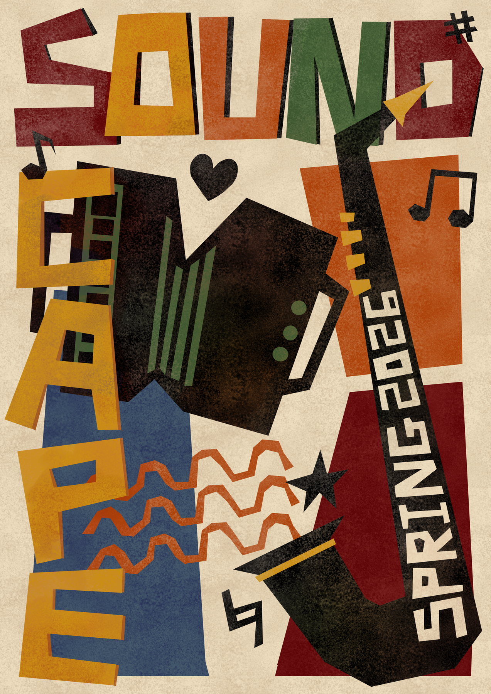
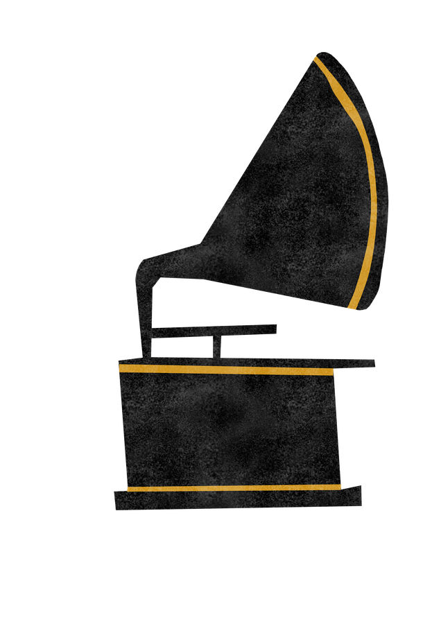
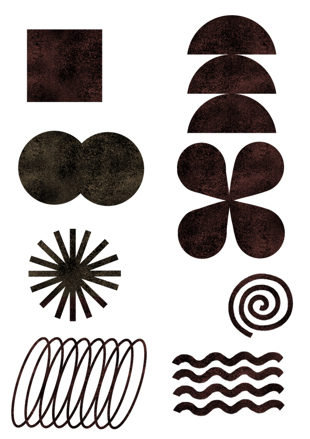
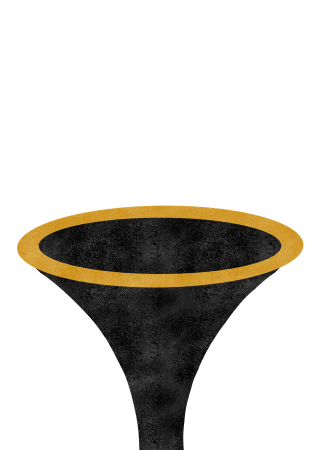
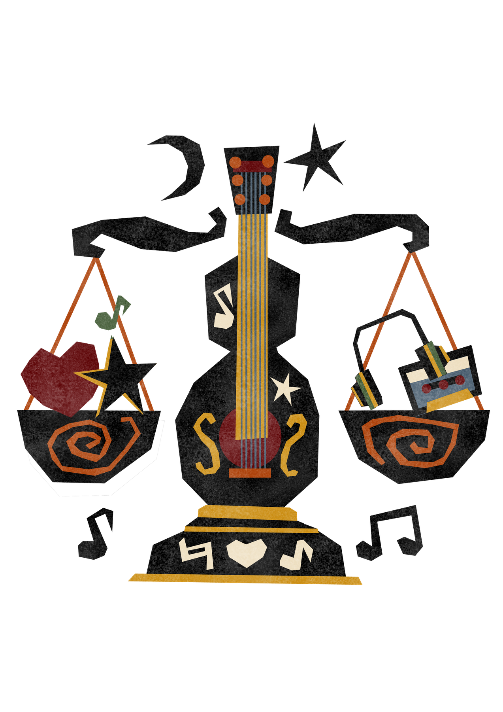
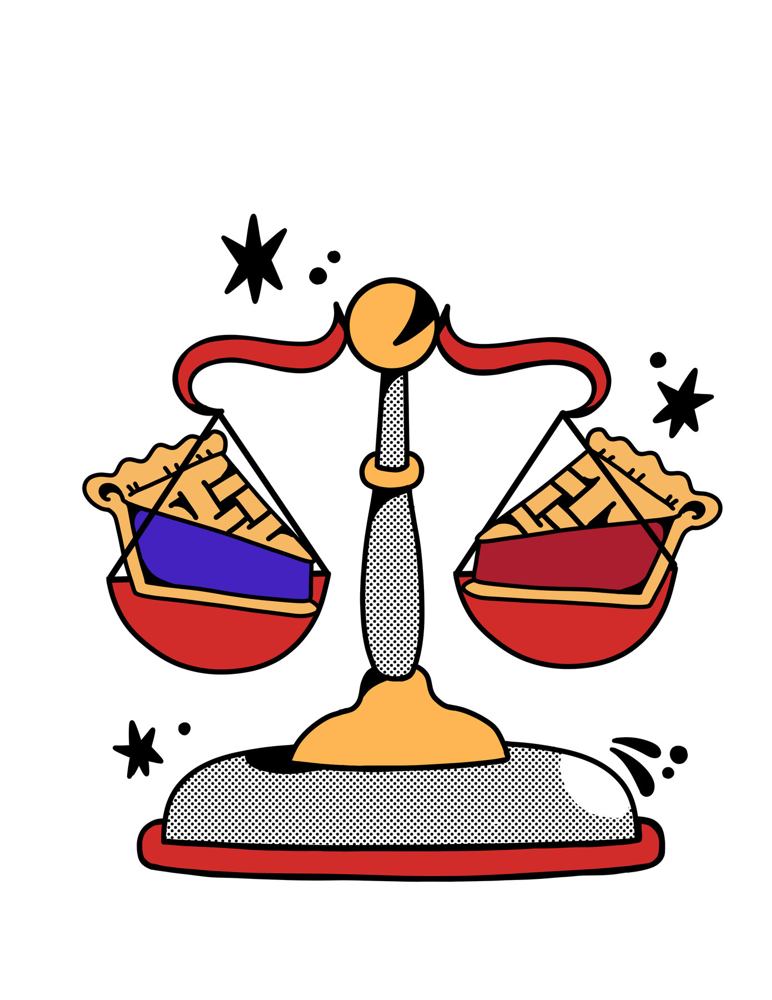

Many voices needed one visual home.
A student literary publication brings together writing with different tones, subjects, and emotional registers. The design needed to create unity without flattening each contributor's individuality.
Editorial design · 2025–26
Visual layouts and graphic assets supporting a student literary magazine's storytelling through typography, hierarchy, and thoughtful presentation.







A student literary publication brings together writing with different tones, subjects, and emotional registers. The design needed to create unity without flattening each contributor's individuality.
My role was to develop layouts and graphic assets that made the publication feel intentional, readable, and expressive across print and social touchpoints.
I explored typography, cover direction, logo variations, spacing, and repeatable visual elements. Each decision was tested against the tone of the writing and the reading experience.
The work supported Food for Thought and Soundscape. I learned how editorial design can guide attention quietly and how a consistent system can still leave room for surprise.

